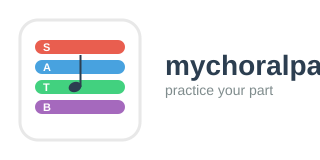
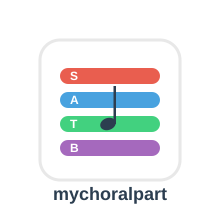

Launch Player
Free online MIDI player for choir members
Start Practicing NowNo sign-up required • Works on any device • Completely free
Listen to just your vocal part (Soprano, Alto, Tenor, or Bass) or blend it with other voices.
Play, pause, rewind, and adjust tempo to match your learning pace.
Works on desktop, tablet, and mobile. Practice at home, on the bus, or wherever you are.
Upload your choir's MIDI files and start practicing immediately. Compatible with standard MIDI format.
No subscriptions, no hidden fees. Just a simple tool to help you learn your part.
Your files stay in your browser. No registration required, no data collected.
Whether you're a Soprano, Alto, Tenor, or Bass, MyChoralPart helps you master your part with color-coded voice isolation.
Get a MIDI file from your choir director or find one online. Just drag and drop it into the player.
Choose your voice part (S, A, T, or B). You can mute other parts or adjust their volume.
Listen, repeat, slow down difficult sections. Practice until you've got it down perfectly.
Join choir members already using MyChoralPart to perfect their parts
Open the Player